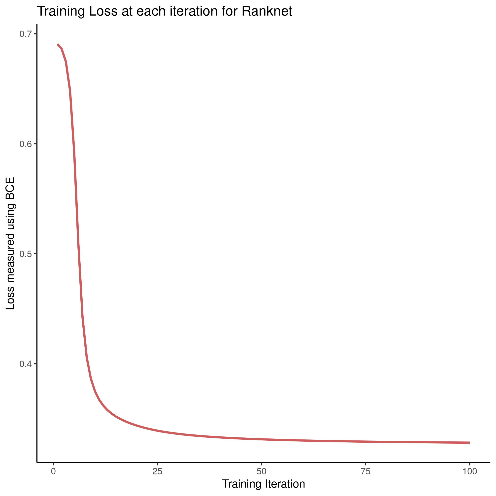

Implementing of RankNet
Table of Contents
- 1. Introduction
- 2. Motivation
- 3. Implementation
- 4. Difficulties
- 5. Further Research
- 6. Conclusion
- 7. Text and References
- 8. Fractals
- 9. Appendix
# #+TODO: TODO IN-PROGRESS WAITING DONE
1 Introduction
Ranknet is an approach to Machine-Learned Ranking (often refered to as "/Learning to Rank" liuLearningRankInformation2009) that began development at Microsoft from 2004 onwards christopherburgesRankNetRankingRetrospective2015, although previous work in this area had already been undertaken as early as the 90s (see generally fuhrProbabilisticModelsInformation1992,fuhrOptimumPolynomialRetrieval1989,fuhrProbabilisticModelsInformation1992,geyInferringProbabilityRelevance1994,wongLinearStructureInformation1988) these earlier models didn't perform well compared to more modern machine learning techniques manningIntroductionInformationRetrieval2008.
Information retrieval is an area that demands effective ranking of
queries, although straight-forward tools such as grep, relational
databases (e.g. sqlite, MariaDB, PostgreSql) or NoSQL (e.g. CouchDB,
MongoDB) can be used to retrieve documents with matching characters
and words, these methods do not perform well in real word tasks
across large collections of documents because they do not provide
any logic to rank results (see generally
viksinghComparisonOpenSource2009).
2 Motivation
Search Engines implement more sophisticated techniques to rank results, one such example being TF-IDF weighting martyschochBleveSearchDocumentation , well established search engines such as Apache Lucene apachesoftwarefoundationLearningRankApache2017 and Xapian jamesaylettGSoCProjectIdeasLearningtoRankStabilisationXapian2019, however, are implementing Machine-Learned Ranking in order to improve results.
This paper hopes to serve as a general introduction to the implementation
of the Ranknet technique to facilitate developers of search engines in
more modern languages (i.e. Go and Rust) in implementing
it. This is important because these more modern languages are more
accessible huntThesisSubmittedPartial
and memory safe perkelWhyScientistsAre2020 than C/C++
respectfully, without significantly impeding performance; this will
encourage contributors from more diverse backgrounds and hence
improve the quality of profession-specific tooling.
For a non-comprehensive list of actively maintained search engines, see § 9.1 of the appendix.
3 Implementation
Neural Networks
Ranking/ is the process of applying machine learning algorithms to ranking problems, it .
This implementation will first apply the approach to a simple data set so as to clearly demonstrate that the approach works, following that the model will be extended to support wider and more complex data types before finally being implemented on a corpus of documents.
3.1 Neural Networks
The Ranknet method is typically implemented using a Neural Networks 1, although other machine learning techniques can also be used christopherburgesRankNetRankingRetrospective2015, Neural Networks are essentially a collection of different regression models and classifiers that are fed into one another to create a non-linear classifier, a loss function is used to measure the performance of the model with respect to the parameters (e.g. RMSE 2 or BCE 3) and the parameters are adjusted so as to reduce this error by using the Gradient Descent Technique (although there are other optimisation algorithms such as RMSProp and AdaGrad mukkamalaVariantsRMSPropAdagrad2017 that can be shown to perform better, see bushaevUnderstandingRMSpropFaster2018). The specifics of Neural Networks are beyond the scope of this paper (see hmkcodeBackpropagationStepStep or more generally pictonNeuralNetworks1994).
3.1.1 The Ranknet Method
The Ranknet method is concerned with a value \(p_{ij}\) that measures the probability that an observation \(i\) is ranked higher than an observation \(j\).
A Neural Network (\(n\)) is trained to return a value \(s_k\) from a feature vector \(\mathbf{X}_k\):
\[n(\mathbf{X}_i) = s_i \quad \exists k\] So as to minimise the error of:
\begin{align} p_{ij} &= \mathrm{sig}\left(\sigma, (s_i-s_j) \right) \quad \exists \sigma \in \mathbb{R} \\ &\text{where:} \nonumber \\ &\quad \mathrm{sig}\left(\sigma, x\right) = \frac{1}{1+e^{\sigma \cdot x}} \end{align}3.1.1.1 Version Control
The implementation in this paper corresponds to the walkthrough branch
of the git repository used in production of this work, id values
(e.g. :08db5b0:) will be appended to titles to denote specific
changes made in that section. See § 9.4 for
more specific guidance.
3.1.1.2 Code listings
The code listings provided will use a standard set of import
statements (see § 9.2 ) and so they will be
omitted from the listings, for more comprehensive guidance on
implementing this code refer to the documentation page4 that
accompanies the git repo.
3.2 Creating Data cf9ab26
The first step is to create a simple data set and design a neural network that can classify that data set, the data set generated should have two classes of data (this could be interpreted as relevant and irrelevant documents given the features or principle components of a data set), this can be implemented using sci kit learn as shown below and visualized5 in figure 1.6
In order to fit a Neural Network the PyTorch package can be used NEURIPS2019_9015, this will allow the gradients of the neural network to be calculated numerically without needing to solve for the partial derivatives, hence the data will need to be in the form of tensors.
def make_data(create_plot=False, n=1000, dtype=torch.float, dev="cpu", export=""): X, y = datasets.make_blobs(n, 2, 2, random_state=7) # X, y = datasets.make_moons(n_samples=n, noise=0.1, random_state=0) # Moons Data for later # Save the data somewhere if necessary if export != "": export_data(X, y, export) # Reshape the data to be consistent y = np.reshape(y, (len(y), 1)) # Make y vertical n x 1 matrix. # -- Split data into Training and Test Sets -------------------- data = train_test_split(X, y, test_size=0.4) if(create_plot): # Create the Scatter Plot plt.scatter(X[:, 0], X[:, 1], c=y) plt.title("Sample Data") plt.show() # Make sure we're working with tensors not mere numpy arrays torch_data = [None]*len(data) for i in range(len(data)): torch_data[i] = torch.tensor(data[i], dtype=dtype, requires_grad=False) return torch_data # Set Torch Parameters dtype = torch.float dev = test_cuda() # Generate the Data X_train, X_test, y_train, y_test = make_data( n=int(300/0.4), create_plot=True, dtype=dtype, dev=dev, export = "/tmp/simData.csv")

Figure 1: Generated data, output classes denote document relevance and the axis features or principle components
3.3 Creating a Neural Network 7291112
A Neural Network model can be designed as a class, here a 2-layer model using Sigmoid functions has been described, this design was chosen for it's relative simplicity:
class three_layer_classification_network(nn.Module): def __init__(self, input_size, hidden_size, output_size, dtype=torch.float, dev="cpu"): super(three_layer_ranknet_network, self).__init__() self.wi = torch.randn(input_size, hidden_size, dtype=dtype, requires_grad=True, device=dev) self.wo = torch.randn(hidden_size, output_size, dtype=dtype, requires_grad=True, device=dev) self.bi = torch.randn(hidden_size, dtype=dtype, requires_grad=True, device=dev) self.bo = torch.randn(output_size, dtype=dtype, requires_grad=True, device=dev) self.σ = torch.randn(1, dtype=dtype, requires_grad=True, device=dev) self.losses = [] # List of running loss values self.trainedQ = False # Has the model been trained yet? def forward(self, x): x = torch.matmul(x, self.wi).add(self.bi) x = torch.sigmoid(x) x = torch.matmul(x, self.wo).add(self.bo) x = torch.sigmoid(x) return x def loss_fn(self, x, y): y_pred = self.forward(x) return torch.mean(torch.pow((y-y_pred), 2)) def misclassification_rate(self, x, y): y_pred = (self.forward(x) > 0.5) return np.average(y != y_pred)
A model can then be instantiated, a 2-3-1
model has, arbitrarily, been implemented in this case:7
# Set Seeds torch.manual_seed(1) np.random.seed(1) # Set Torch Parameters dtype = torch.float dev = test_cuda() # Make the Data X_train, X_test, y_train, y_test = make_data( n=100, create_plot=True, dtype=dtype, dev=dev) # Create a model object model = three_layer_classification_network( input_size=X_train.shape[1], hidden_size=2, output_size=1, dtype=dtype, dev=dev) # Send some data through the model print("\nThe Network input is:\n---\n") print(X_train[7,:], "\n") print("The Network Output is:\n---\n") print(model.forward(X_train[7,:]).item(), "\n")
The Network input is: --- tensor([-1.5129, 2.9332]) The Network Output is: --- 0.22973690927028656
3.4 Train the Model with Gradient Descent 7d46636
Now that the model has been fit, a method to train the model can be implmented 8:
class three_layer_classification_network(nn.Module): # __init__ method goes here, see above # ... # ... def train(self, x, target, η=30, iterations=2e4): bar = Bar('Processing', max=iterations) # progress bar for t in range(int(iterations)): # Calculate y, forward pass y_pred = self.forward(x) # Measure the loss loss = self.loss_fn(x, target) # print(loss.item()) self.losses.append(loss.item()) # Calculate the Gradients with Autograd loss.backward() with torch.no_grad(): # Update the Weights with Gradient Descent self.wi -= η * self.wi.grad; self.wi.grad = None self.bi -= η * self.bi.grad; self.bi.grad = None self.wo -= η * self.wo.grad; self.wo.grad = None self.bo -= η * self.bo.grad; self.bo.grad = None self.σ -= η * self.σ.grad; self.σ.grad = None bar.next() bar.finish() # ; Zero out the gradients, they've been used # Rest of the Class Definition Below ...VVV...
With this definition the model can hence be trained in order to produce meaningful classifications, as shown below, this model classifies the points perfectly, even on the testing data, the training error over time is shown in figure 2.
# Make the Data X_train, X_test, y_train, y_test = make_data( n=100, create_plot=True, dtype=dtype, dev=dev) # Create a model object model = three_layer_classification_network( input_size=X_train.shape[1], hidden_size=2, output_size=1, dtype=dtype, dev=dev) # Train the Model model.train(X_train, y_train, η=1e-2, iterations=10000) # Plot the losses plt.plot(model.losses) plt.title("Losses at each training iteration") plt.show() print("The testing misclassification rate is:\n") print(model.misclassification_rate(X_test, y_test))
Figure 2: Training error, given by \(l\left( x \right) = \sum^{n}_{i= 1} \left[ \left( x_i - f\left( x_i \right) \right)^2 \right]\), at each iteration of training
3.5 Implement Ranknet f25f376 05df04f
Now that the model can classify the data, the implementation will be modified to:
- Measure loss using a BCE function which is reported to perform better in the literature christopherburgesRankNetRankingRetrospective2015,christopherburgesRankNetLambdaRankLambdaMART2010
- Modify the model so that it operates pairwise, such that:
Two points are identified, sent through the neural network and two values returned:
\begin{align} s_i = n(\mathbf{X}_i) \label{eq:forward_single1}\\ s_j = n(\mathbf{X}_j) \label{eq:forward_single2} \end{align}The network previously created can be adapted for this and hence the method will be renamed to
forward_singleand this will represent function \(n()\) implemented in \eqref{eq:forward_single1} and \eqref{eq:forward_single2}These values will be combined to give a single value which is intended to measure the model confidence:9
\begin{align} \hat{P}_{ij} &= \mathrm{sig}\left(\sigma, (s_i-s_j)\right), \quad \exists \sigma \in \mathbb{R} \\ &= \frac{1}{1+e^{\sigma \cdot (s_i-s_j)}} \label{eq:sig-comb} \end{align}The range of \eqref{eq:sig-comb} is the interval \(\hat{P}_{ij} = \left[0, 1\right]\), let \(\bar{P}_{ij}\) be the known probability10 that \(\mathbf{X}_i \triangleright \mathbf{X}_j\), the simulated data has a boolean range of \(\bar{P}_{ij} \in \left\{0, 1\right\}\), this can be recast to \(\{-1, 0, 1\}\) and then linearly scaled to \(\left[0, 1\right]\) like so:
\begin{align} \bar{P}_{ij} & \leftarrow p_i - p_j \\ \bar{P}_{ij} & \leftarrow \frac{1+\bar{P}_{ij}}{2} \end{align}
These modifications only need to be made to the neural network class like so:
class three_layer_ranknet_network(nn.Module): # __init__ method # ... # ... def forward(self, xi, xj): si = self.forward_single(xi) sj = self.forward_single(xj) out = 1 / (1 + torch.exp(-self.σ * (si - sj))) return out def forward_single(self, x): x = torch.matmul(x, self.wi).add(self.bi) x = torch.sigmoid(x) x = torch.matmul(x, self.wo).add(self.bo) x = torch.sigmoid(x) return x def loss_fn(self, xi, xj, y): y_pred = self.forward(xi, xj) loss = torch.mean(-y * torch.log(y_pred) - (1 - y) * torch.log(1 - y_pred)) return loss def pairwise(iterable): "pairwise([1,2,3,4]) --> [(1, 2), (1, 3), (1, 4), (2, 3), (2, 4), (3, 4)]" s = list(iterable) pair_iter = chain.from_iterable(combinations(s, r) for r in [2]) return pair_iter
The training method must be adapted to interact with these changes like so:11
class three_layer_ranknet_network(nn.Module): # __init__ method # ... # ... def train(self, x, target, η=1e-2, iterations=4e2): self.trainedQ = True # Create a progress bar bar = Bar('Processing', max=iterations) # Train for a number of iterations for t in range(int(iterations)): sublosses = [] # Loop over every pair of values for pair in pairwise(range(len(x) - 1)): xi, yi = x[pair[0], ], target[pair[0]] xj, yj = x[pair[1], ], target[pair[1]] # encode from {0, 1} to {-1, 0, 1} y = yi - yj # Scale between {0,1} y = 1 / 2 * (1 + y) # Calculate y, forward pass y_pred = self.forward(xi, xj) # Measure the loss loss = self.loss_fn(xi, xj, y) sublosses.append(loss.item()) # Calculate the Gradients with Autograd loss.backward() # Update the Weights with Gradient Descent # ; Zero out the gradients, they've been used with torch.no_grad(): self.wi -= η * self.wi.grad; self.wi.grad = None self.bi -= η * self.bi.grad; self.bi.grad = None self.wo -= η * self.wo.grad; self.wo.grad = None self.bo -= η * self.bo.grad; self.bo.grad = None self.σ -= η * self.σ.grad ; self.σ.grad = None self.losses.append(np.average(sublosses)) bar.next() bar.finish() self.threshold_train(x, target, plot=False)
This can then be implemented as before, the loss function is provided at figure 3.
# Make the Data X_train, X_test, y_train, y_test = make_data( n=30, create_plot=True, dtype=dtype, dev=dev) # Create a model object model = three_layer_ranknet_network( input_size=X_train.shape[1], hidden_size=2, output_size=1, dtype=dtype, dev=dev) # Train the Model model.train(X_train, y_train, η=1e-1, iterations=1e2) # Save the losses np.savetxt(fname="/tmp/losses.csv", X=model.losses, delimiter=',')

Figure 3: BCE training loss at each iteration for the Ranknet method.
3.6 Implement sorting 99b390a 7d46636
One of the difficulties in implementing this, however, is that it is not simple to determine whether or not the model has classified the data well,12 In order to address this the model can be implemented to sort the data by ranked values and then visualised. To implement this a derivative of the quicksort algorithm was chosen as a sorting function hoareAlgorithm64Quicksort1961, this was implemented by adapting code already available in the literature kernighanProgrammingLanguage1988 and online PythonProgramQuickSort2014:
def split(values, left, right, data, model): # Define the leftmost value l = (left-1) # Set the right value as the pivot pivot = values[right] # TODO The pivot should be random for q in range(left, right): # Only move smaller values left if leq(values[q], pivot, data, model): # +1 next left element l = l+1 # Swap the current element onto the left values[l], values[q] = values[q], values[l] # Swap the pivot value into the left position from the right values[l+1], values[right] = values[right], values[l+1] return (l+1) def qsort(values, left, right, data, model): if len(values) == 1: return values if right > left: # pi is the index of where the pivot was moved to # It's position is now correct pi = split(values, left, right, data, model) # Do this again for the left and right parts qsort(values, left, pi-1, data, model) qsort(values, pi+1, right, data, model) import random def leq(a, b, data, model): score = model.forward(data[a, :], data[b, :]) if score <= 0.5: return True if score > 0.5: return False if (a < b): return True else: return False if DEBUG: for i in range(3): import random values = random.sample(range(9), 7) n = len(values) print(values) qsort(values, 0, n-1, data, model) print("==>", values)
The data can then be plotted, as in figure and exported like so:13
# Main Function def main(): # Make the Data X_train, X_test, y_train, y_test = make_data(n=100, create_plot=True, dtype=dtype, dev=dev) # Create a model object model = three_layer_ranknet_network(input_size=X_train.shape[1], hidden_size=2, output_size=1, dtype=dtype, dev=dev) # Train the Model model.train(X_train, y_train, η=1e-1, iterations=1e2) # Visualise the Training Error plot_losses(model) # Misclassification won't work for ranked data # Instead Visualise the ranking plot_ranked_data(X_test, y_test, model) def plot_losses(model): plt.plot(model.losses) plt.title("Cost / Loss Function for Iteration of Training") plt.show() def plot_ranked_data(X, y, model): # Create a list of values n = X.shape[0] order = [i for i in range(n)] # Arrange that list of values based on the model quicksort(values=order, left=0, right=(n - 1), data=X, model=model) print(order) ordered_data = X[order, :] y_ordered = y[order] np.savetxt("/tmp/ordered_data.csv", X=ordered_data.numpy(), delimiter=',') p = plt.figure() for i in range(len(ordered_data)): plt.text(ordered_data[i, 0], ordered_data[i, 1], i) plt.scatter(ordered_data[:, 0], ordered_data[:, 1], c=y_ordered) plt.title("Testing Data, with ranks") plt.show() if __name__ == "__main__": main()

Figure 4: Using Machine Learned Ranking to order the points from most to least relevant
So instead of ranking, sort the values, this produces the output.
but this is the problem, did it work? it's not clear, because even if the model was not trained we get the following (put them side by side).
So this is definitely one of the hard issues.
what would be better would be to classify data with a rating (i.e. wine scores), only show the model whether the wine is good/bad and compare the output order with the input order, that would be an effective way to see that it works. This was not yet effectively implemented.
3.7 Moons
3.8 Optimisers
3.9 Batches
3.10 Wine
3.11 Rank Wiki Articles
4 Difficulties
- Don't use torch
- Do it by hand first because it can be hard to see if the correct weights are being updated sensibly, making debugging very difficult.
- R or Julia would be easier because counting from 0 get's pretty confusing when dealing with {1, 0}, {-1, 0, 1}.
Don't use misclassification rate to measure whether the ranking
- In hindsight this is obvious, but at the time misclassification was a tempting metric because of it's interpretability
was correct
Very difficult to see if the model is working
- A continuous function will still produce an ordered pattern in the ranking of results, even if the model hasn't been trained, so visualising isn't helpful either.
- Implement it on a data set that already has order, obfuscate the
order and then contrast the results
- or use a measurement
- Plot the loss function of the training data live, the model is slow to train and waiting for it to develop was a massive time drain.
5 Further Research
5.1 Practical Improvements
- Apply this to documents to get a sorted list, like the wine data
- The "Quicksort" algorithm likely needs a random pivot to be efficient timroughgardenQuicksortOverview2017
5.2 Evaluate performance improvements
It is still not clear how the performance of Ranknet compares to traditional approaches implemented by search engines (see § 9.1), further study would ideally:
- Write a program to query a corpus of documents using an existing search engine.
- Or possibly just implement TF-IDF weighting in order to remove variables.
- Extend the program to implement machine learned ranking
- Measure and contrast the performance of the two models to see whether there are any significant improvements.
This could be implemented with TREC datasets usnationalinstituteofstandardsandtechnologyTextREtrievalConference using a cummulated-gain cost function jarvelinCumulatedGainbasedEvaluation2002 as demonstrated in previous work viksinghComparisonOpenSource2009.
5.3 Evaluate alternative machine learning models
i.e. can SVM's or trees be used instead of neural networks?
6 Conclusion
7 Text and References
Fractals are complex shapes that often occur from natural processes, in this report we hope to investigate the emergence of patterns and complex structures from natural phenomena. We begin with an investigation into fractals and the concept of dimension and then discuss links between fractal patterns and natural processes.
This is a Reference tuGraphBasedSemiSupervisedNearestNeighbor2016a and another nicodemiIntroductionAbstractAlgebra2007a and yet another christopherburgesRankNetLambdaRankLambdaMART2010.
8 Fractals
Images are shown in figure .
9 Appendix
9.1 Search Engines
There are many open source search engines available , a cursory review found the following popular projects:
- Zettair (
C) jansenCyclaeroZettair2020 - Apache lucene/Solr (
Java) apachesoftwarefoundationLearningRankApache2017- Implemented by DocFetcher docfetcherdevelopmentteamDocFetcherFastDocument
- Sphinx (
C++) yurischapovSphinxsearchSphinx2021 - Xapian (
C++) ollybettsXapianXapian2021- Implemented by Recoll jean-francoisdockesRecollUserManual
More Modern Search engines include:
9.1.1 Fuzzy String Match
Somewhat related are programs that rank string similarity, such programs don't tend to perform well on documents however (so for example these would be effective to filter document titles but would not be useful for querying documents):
9.2 Import Statements
The following import statements were included, where used, 14 separate scripts were used to make the model as modular as possible, such corresponding inputs have also been listed:
# Import Packages from itertools import chain from itertools import combinations from itertools import tee from progress.bar import Bar import math as m import matplotlib.pyplot as plt import numpy as np import random import sys import sys import torch import torch from torch import nn # Sepereate Scripts lcated below main from ranknet.test_cuda import test_cuda from ranknet.make_data import make_data from ranknet.neural_network import three_layer_ranknet_network from ranknet.quicksort import quicksort
9.3 Export Data Method
The data was exported by printing the values to a text file like so:
def export_data(X, y, export): try: os.remove(export) print("Warning, given file was over-written") except: pass with open(export, "a") as f: line = "x1, x2, y \n" f.write(line) for i in (range(X.shape[0])): line = str(X[i][0]) + ", " + str(X[i][1]) + ", " + str(y[i]) + "\n" f.write(line) print("Data Exported")
9.4 Version Control Repository
The git repository used in production of this code is currently
available on GitHub at github.com/CRMDS/CRMDS-HDR-Training-2020, in
order to get a local copy, execute the following commands (bash):
# Clone the repository git clone https://github.com/CRMDS/CRMDS-HDR-Training-2020 # Change to the subdirectory cd CRMDS-HDR-Training-2020/ranknet # Checkout the Walkthrough branch git checkout walkkthrough # list the changes git log
Consider the use of tools like magit MagitMagit2008 and git-timemachine peterstiernstromEmacsmirrorGittimemachine2014 (or GitLens amodioEamodioVscodegitlens2016 and git-temporal beewilkersonGittemporalGittemporalMono2018 in VsCode) in order to effectively preview the changes at each step, alternatively a pager like bat peterSharkdpBat2018 can also be used with something like fzf choiJunegunnFzf2021 like so:
git log | grep '^commit' | sed 's/^commit\ //' |\ fzf --preview 'git diff {}^! |\ bat --color always'
9.4.1 Version Control Log for Walkthrough
| Commit ID | Message |
|---|---|
ed5f4cf |
Initial Commit |
075acf9 |
Walkthrough Initial Commit |
cf9ab26 |
Generate data to use for classification |
7291112 |
Create a Neural Network Model |
7d46636 |
Implement gradient descent to train neural network |
f25f376 |
Adapt Neural Network to perform Ranking |
42509ab |
Implement sorting algorithm to visualise ranking order |
05df04f |
Adapt Neural Network to perform Ranking |
99b390a |
Implement sorting algorithm to visualise ranking order |
473dce3 |
Implement optimizer to replace mere gradient descent |
4141e92 |
Train Model using Batches not entire dataset |
a2671a6 |
Format code to make it more readable |
d11e607 |
plot and only train on different ranked pairs |
Footnotes:
An early goal of this research was to evaluate the performance of different machine learning algorithms to implement the Ranknet method, as well as contrasting this with simple classification approaches, this research however is still ongoing, see § 5.3
RMSE Root Mean Square Error
BCE Binary Cross Entropy
Visualisations for this Report were implemented using
org-babel dominikOrgModeReference2018 inside Emacs
stallmanGNUEmacsManual2002 to call R
rcoreteamLanguageEnvironmentStatistical2021 with GGPlot2
wickhamGgplot2ElegantGraphics2016a (and Tidyverse
wickhamWelcomeTidyverse2019 generally), the source code for this
is avaliable in the report manuscript available in the git repository
available at github.com/RyanGreenup/ranknet/blob/main/Report/Report.org
note that the model has not yet been trained, the weights are random and the model output is not related to the data at all.
This class definition is incomplete and serves only to show the method definition corresponding to the original class shown in § 3.3
This value is a measurement of the models "confidence" but could be extended to represent the "measured probability" of one item being ranked higher than an other (e.g. the probability that a person would rank one type of wine as better than the other in a random sample).
Note the convention that the symbols \(\triangleleft, \enspace \triangleright\) have been adopted to denote the ranking of two observations, analogous to \(<, \enspace >\)
Note the definition of the pairwise function, this was
incorrectly implemented initially (f25f376) and rectified shortly
after (05df04f). see 9.4.1
A naive misclassification method was implemented (f25f376),
but it was not very insightful and so was omitted from this report.
Including import statements where they are not used is fine,
other than complaints from a linter following PEP
nickcoghlanPEPStyleGuide2001 (e.g. autopep
hattoriAutopep8ToolThat) the code will function just fine.